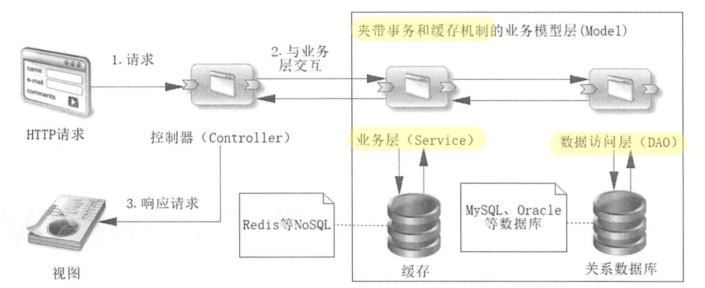

Copyright © 2015 Powered by MWeb, Theme used GitHub CSS.
只会关注那些被直接被引用的库，而不是像 Java、C 和 C++那样,要遍历依赖链中所有依赖的库
在现代硬件上,编译整个 Go 语言的源码树只需要 20 秒。
因为没有从编译代码到执行代码的中间过程,用动态语言编写应用程序可以快速看到输出。
代价是, 动态语言不提供静态语言提供的类型安全特性, 不得不经常用大量的测试套件来避免在运行的时候出现类型错误这类 bug。
在 Go 语言里,完全不用为这件事情操心,因为编译器就能帮用户捕获这种类型错误。
go语言内置并发支持，称为goroutine，但仅仅原生支持并不够。
并发的最难的部分就是要确保其他并发运行的进程、线程或 goroutine不会意外修改用户的数据。当不同的线程在没有同步保护的情况下修改同一个数据时，总会发生灾难。在其他语言中，如果使用全局变量或者共享内存，必须使用复杂的锁规则来防止对同一个变量的不同步修改。
为了解决这个问题，通道（channel）提供了一种新模式,从而保证并发修改时的数据安全。通道这一模式保证同一时刻只会有一个 goroutine修改数据。
goroutine，执行单位是函数，相当于其他语言中线程的作用，但是他占用的内存比线程小，需要编写的代码比线程少，而且go语言会有内置的一组逻辑处理器，来做goroutine的调度，调度器会绑定在线程上，一个机器可以启动成千上万个goroutine。
goroutine，只需要关键字go，就能触发。
Spring大框架结构下，为了适应当今移动互联网前后台分离的要求，SpringMVC（Model-View-Controller）框架应运而生。
在理解MVC概念之前，我们需要先理解一个主流互联网语境下的概念：前后端分离。这里的“分离”有两层含义，一是指的是代码逻辑分离，即前端和后端开发人员能只通过简明的API文档进行交流。二是，随着互联网公司人员架构体系的扩大，在岗位分工上出现了特定的前端以及后端的开发人员。对这两个含义来说，前者是技术趋势，后者是商业快速发展带来的结果。换而言之，商业化不明显的开发过程中，一般来说，前后端开发人员是不分家的，一个或多个软件工程师是需要理解并能够实现两端的逻辑的。所以，作为一个以技术为生的工程师，就很有必要明白MVC这个横跨前后端的概念。
MVC即Model、View、Controller即模型、视图、控制器。

请求会首先到达控制器，然后控制器主要作用是分发请求，会根据请求内容去访问Model层。Model层的数据主要从数据库和NoSQL中来，而且对于数据库而言往往还存在事务的机制，为了适应这样的变化，设计者会把模型层再细分为两层，即服务层(Service)和数据访问层(DAO)。当控制器获取到由模型层返回的数据后，就将数据渲染到视图中，这样就能够展现给用户了。 -- 《深入浅出SpringBoot 2.x》
换句话说，View层是界面，Model层是业务逻辑，Controller层用来调度View层和Model层，来将不同的View和不同的Model组织在一起，顺便替双方传递消息。从抽象Controller层的目的来看，MVC要实现的目标是将软件用户界面和业务逻辑分离以使代码可扩展性、可复用性、可维护性、灵活性加强。
开发与配置分离
Copyright © 2015 Powered by MWeb, Theme used GitHub CSS.